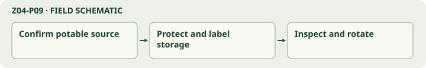

Z04-P09 · Water
Prepare a household water reserve
Make an accessible reserve of known potable water with verified storage.
When it applies · Before a household service disruption or evacuation.
Equipment · Sealed commercial water or suitable sanitized food-grade containers, labels and protected storage space.

Actions
- Start with commercially bottled water or an approved potable source. If filling containers, use CDC storage guidance and choose vessels with known prior contents.[W06]
- Close the container and label it with its fill date if applicable. Store away from chemicals and heat, and plan how to dispense without contaminating it.[W06, ED]
- Size the reserve for the household, pets, weather and any medical needs. Keep an accessible portion for evacuation.[W06, T07, ED]
Verify · Inspect seals and condition periodically, and follow the appropriate replacement guidance.[W06, ED]
Stop or change course · Replace containers with leaks or uncertain prior contents. If chemical contamination is suspected, seek another supply.[W01, W06]
Evidence and editorial notes
- T07 · FEMA · Flood Hazard Information Sheet
- How to stay safe when a flood threatens; take an active role · U.S. household flood preparedness and evacuation
Prepare contacts, medication and supplies. Heed evacuation instructions and avoid flooded roads.
Primary source · checked 2026-11-24 - W01 · CDC · How to Make Water Safe in an Emergency
- Water with fuel or toxic chemicals in it · Suspected fuel, toxic chemicals or radioactive contamination
Use a different safe supply. Standard boiling and microbial disinfection do not make this water safe.
Primary source · checked 2026-11-24 - W06 · CDC · How to Create an Emergency Water Supply
- How to store emergency water; Safe storage containers · Potable water intended for emergency storage
Prefer sealed commercial water or clean food-grade tight-closing containers. Avoid containers that held toxic chemicals.
Primary source · checked 2026-11-24
Source lineage · CDC emergency water supply; new manuscript.